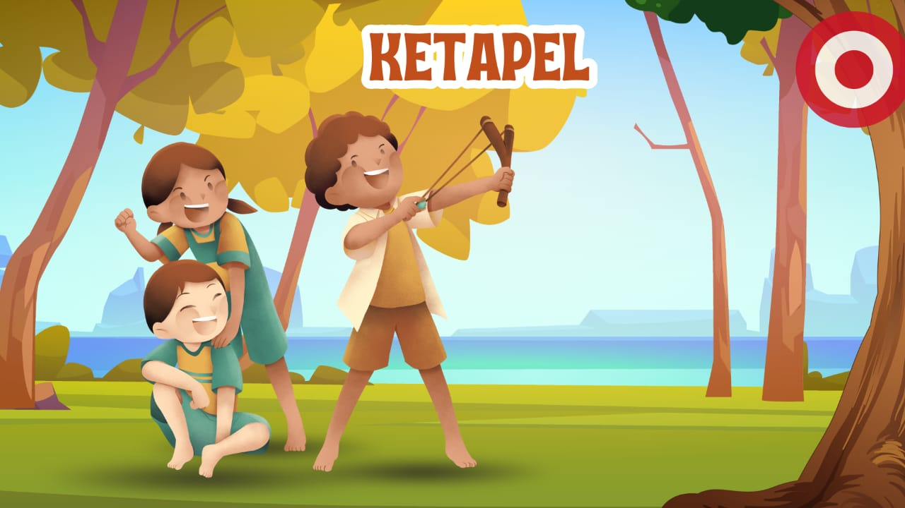

Kegiatan Ramah Anak
Ketapel
Permainan yang menggunakan alat berbentuk Y dengan karet sebagai pelontar. Anak-anak biasanya melontarkan batu kecil atau biji-bijian.
Jumlah pemain: 1–4 orang
Enggrang
Berjalan di atas dua bilah bambu panjang dengan pijakan kaki. Permainan ini melatih keseimbangan dan koordinasi tubuh.
Jumlah pemain: 2 orang atau lebih
Congklak
Menggunakan papan berlubang dan biji congklak/kerikil. Pemain mengumpulkan biji sebanyak mungkin di lubang sendiri.
Jumlah pemain: 2 orang
Ular Naga Panjang
Dua pemain membentuk gerbang dengan tangan, anak-anak lain berbaris melewati sambil bernyanyi. Di akhir lagu, pemain belakang “terperangkap” dan memilih kubu.
Jumlah pemain: Minimal 6 orang (lebih seru jika 10+)
Galasin (Gobak Sodor)
Permainan beregu di lapangan kotak-kotak. Tim penjaga menghadang tim penyerang agar tidak bisa melewati garis sampai ke garis akhir.
Jumlah pemain: 6–10 orang (2 tim)
Petak Umpet
Seorang penjaga menghitung sambil menutup mata, pemain lain bersembunyi. Penjaga mencari dan menyebut nama sambil menyentuh "tiang jaga".
Jumlah pemain: Minimal 3 orang
Tapak Gunung
Menggambar kotak di tanah, melompat dengan satu kaki sambil melempar batu ke kotak tertentu dan melanjutkan lompatan sesuai aturan.
Jumlah pemain: 2–6 orang
Kelereng
Bola kaca kecil digunakan untuk menembak kelereng lain di tanah agar menjadi milik kita.
Jumlah pemain: 2–6 orang
Bola Bekel
Bola karet dipantulkan, lalu pemain mengambil biji bekel sesuai urutan aturan permainan.
Jumlah pemain: 2–4 orang
Lompat Karet
Menggunakan karet gelang panjang. Dua orang memegang ujung tali, satu atau lebih melompat melewati tali yang dinaikkan tingkatnya.
Jumlah pemain: Minimal 3 orang
Gasing
Gasing kayu diputar dengan tali. Pemain adu lama putaran atau saling membenturkan gasing lawan.
Jumlah pemain: 2 orang atau lebih
Bakiak
Berjalan bersama dengan menggunakan sepasang sandal kayu yang panjang. Permainan ini melatih kekompakan tim.
Jumlah pemain: 3 orang atau lebih per tim
Layangan
Membuat dan menerbangkan layangan dari bambu dan kertas. Bisa dimainkan sendiri atau beradu dengan layangan lawan.
Jumlah pemain: 1–5 orang
Rangku Alu
Permainan tradisional dari Manggarai, Nusa Tenggara Timur. Penari melompati irama ketukan bambu yang diayunkan.
Jumlah pemain: Minimal 6 orang
Yoyo
Mainan kayu atau besi dengan tali. Diputar lalu ditarik kembali ke tangan, bisa dilakukan trik-trik.
Jumlah pemain: 1–4 orang